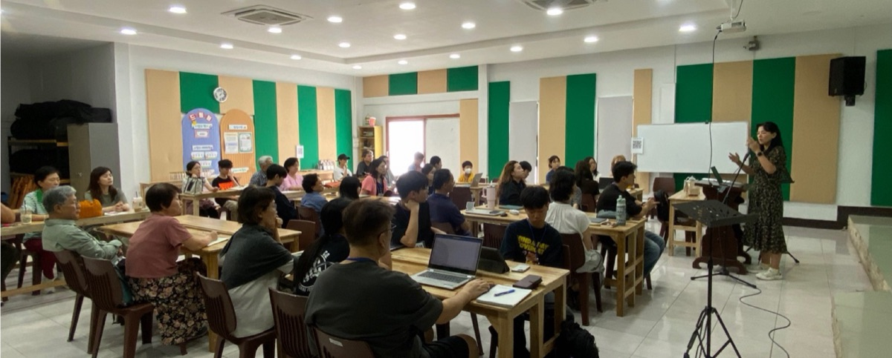

DIRECT PROJECTS
AI와 함께 직접 만든 게임


TEACHING
대표 교육 경험

2026.07.28 ~ 08.02
태국 치앙마이 AI 프로젝트 교육
중고등·성인 28명5개 조웹앱 5개 완성Expo 전시
짧은 시간에 무에서 유로, 시작부터 완성까지 맛볼 수 있어서 너무 재미있는 시간이었습니다.
조끼리 만들었던 것을 저 혼자서 AI를 통해 수정하는 것이 가장 기억에 남았습니다.
2026.08.03 ~ 08.06
태국 치앙마이 Eulogia Mission School 영어 코딩 교육
현지 초등·중학생영어로 수업언플러그드 활동영어 교안 직접 제작
샌드위치 명령, 가상 로봇 활동, 팀별 문제 해결로 알고리즘과 디버깅 개념을 가르쳤습니다.